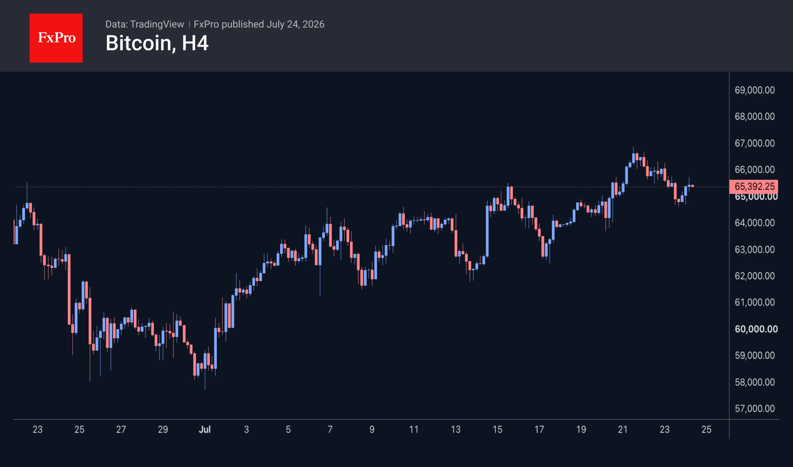

Market Overview
Cryptocurrencies have been affected by jitters in traditional financial markets, losing 0.8% of their market capitalisation over the past 24 hours to $2.23T, dipping to a low of $2.21T at the start of active trading in Asia. The subsequent resumption of growth indicates that the upward trend remains intact and that market participants are keen to buy into local dips, regardless of the rising dollar. The loss of much of the correlation with the equity market has begun to work in cryptocurrencies’ favour after a prolonged period of underperformance. Among the top coins over the past day, the leaders in growth were Tezos (+2.6%), SushiSwap (+2.3%) and Near Protocol (+1.7%). Avalanche (-4%), Dogecoin (-3.3%) and Hedera (-3.2%) lost ground more than the others.
Bitcoin fell during the day from $65.8K to $64.6K, where it found support from buyers. This proved sufficient to push the price back up to $65.5K, forming the seventh consecutive local low higher than the previous one since the start of July. Higher lows have now formed for seven consecutive sessions, but higher highs have yet to develop with the same consistency. As a result, the market is best described as being in an uptrend rather than a well-defined ascending channel.


News Background
Demand for Bitcoin among long-term investors and institutional investors is falling rapidly, according to CryptoQuant. Speculative activity in futures markets remains positive but is below previous levels. The current BTC price is being supported primarily by traders rather than by inflows of new capital.
Inflows into US spot Bitcoin ETFs have continued for seven consecutive trading sessions. According to SoSoValue, investors have injected nearly $1 billion during this period, recouping 22% of June’s outflows. The stabilisation of inflows into BTC ETFs is the most encouraging sign for a calm summer market, notes K33 Research.
Grayscale hopes that if the Fed refrains from further rate hikes and the US economy remains stable, Bitcoin will be able to hold onto its lows for the year and form a cycle bottom. BTC has ‘matured’ as an asset and may complete its decline before autumn, as dictated by the four-year cycle.
Strategy has announced the launch of the Bitcoin Security Consortium, comprising ARK Invest, BlackRock, Blockstream, Coinbase, Fidelity Digital Assets, Galaxy and others. The partners plan to invest $15 million over three years in the long-term security of the BTC network.
Asset management firms that enable investors to generate income from crypto assets, as well as crypto lending, fall under securities law, US SEC Commissioner Hester Peirce stated. The regulator will assess each product on a case-by-case basis, taking into account the specific circumstances.
The FxPro Analyst Team